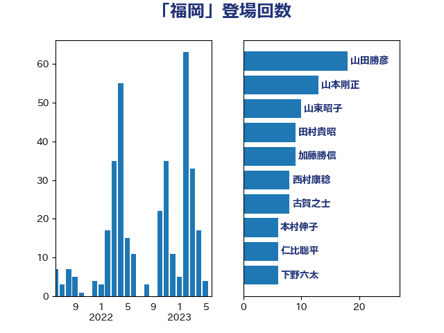

単語「福岡」

| 山田勝彦 | 立憲民主党 | 18 回 |
| 山本剛正 | 日本維新の会 | 13 回 |
| 山東昭子 | 自由民主党 | 10 回 |
| 田村貴昭 | 日本共産党 | 9 回 |
| 加藤勝信 | 自由民主党 | 9 回 |
| 西村康稔 | 自由民主党 | 8 回 |
| 古賀之士 | 立憲民主党 | 8 回 |
| 本村伸子 | 日本共産党 | 6 回 |
| 仁比聡平 | 日本共産党 | 6 回 |
| 下野六太 | 公明党 | 6 回 |
| 稲富修二 | 立憲民主党 | 5 回 |
| 秋野公造 | 公明党 | 5 回 |
| 末次精一 | 立憲民主党 | 5 回 |
| 古川禎久 | 自由民主党 | 5 回 |
| 野村哲郎 | 自由民主党 | 4 回 |
| 浜口誠 | 国民民主党 | 4 回 |
| 松山政司 | 自由民主党 | 4 回 |
| 尾辻秀久 | 無所属 | 4 回 |
| 大家敏志 | 自由民主党 | 4 回 |
| 堤かなめ | 立憲民主党 | 4 回 |
| 吉田久美子 | 公明党 | 4 回 |
| 長友慎治 | 国民民主党 | 3 回 |
| 緒方林太郎 | 無所属 | 3 回 |
| 空本誠喜 | 日本維新の会 | 3 回 |
| 矢倉克夫 | 公明党 | 3 回 |
| 片山さつき | 自由民主党 | 3 回 |
| 櫻井周 | 立憲民主党 | 3 回 |
| 森山浩行 | 立憲民主党 | 3 回 |
| 斎藤アレックス | 国民民主党 | 3 回 |
| 宮本徹 | 日本共産党 | 3 回 |
| 佐藤信秋 | 自由民主党 | 3 回 |
| 井上貴博 | 自由民主党 | 3 回 |
| 青柳仁士 | 日本維新の会 | 2 回 |
| 鎌田さゆり | 立憲民主党 | 2 回 |
| 野田国義 | 立憲民主党 | 2 回 |
| 自見はなこ | 自由民主党 | 2 回 |
| 窪田哲也 | 公明党 | 2 回 |
| 田村憲久 | 自由民主党 | 2 回 |
| 湯原俊二 | 立憲民主党 | 2 回 |
| 森屋宏 | 自由民主党 | 2 回 |
| 末松信介 | 自由民主党 | 2 回 |
| 斉藤鉄夫 | 公明党 | 2 回 |
| 徳永エリ | 立憲民主党 | 2 回 |
| 岸田文雄 | 自由民主党 | 2 回 |
| 岩谷良平 | 日本維新の会 | 2 回 |
| 山際大志郎 | 自由民主党 | 2 回 |
| 小倉將信 | 自由民主党 | 2 回 |
| 宮本岳志 | 日本共産党 | 2 回 |
| 保岡宏武 | 自由民主党 | 2 回 |
| 高野光二郎 | 自由民主党 | 1 回 |
| 高橋千鶴子 | 日本共産党 | 1 回 |
| 階猛 | 立憲民主党 | 1 回 |
| 阿部弘樹 | 日本維新の会 | 1 回 |
| 阿達雅志 | 自由民主党 | 1 回 |
| 長浜博行 | 無所属 | 1 回 |
| 鈴木義弘 | 国民民主党 | 1 回 |
| 野上浩太郎 | 自由民主党 | 1 回 |
| 赤嶺政賢 | 日本共産党 | 1 回 |
| 西野太亮 | 自由民主党 | 1 回 |
| 西村智奈美 | 立憲民主党 | 1 回 |
| 藤木眞也 | 自由民主党 | 1 回 |
| 藤岡隆雄 | 立憲民主党 | 1 回 |
| 荒井優 | 立憲民主党 | 1 回 |
| 芳賀道也 | 国民民主党 | 1 回 |
| 紙智子 | 日本共産党 | 1 回 |
| 笠浩史 | 無所属 | 1 回 |
| 福島みずほ | 社会民主党 | 1 回 |
| 福岡資麿 | 自由民主党 | 1 回 |
| 渡辺創 | 立憲民主党 | 1 回 |
| 浮島智子 | 公明党 | 1 回 |
| 浜地雅一 | 公明党 | 1 回 |
| 泉健太 | 立憲民主党 | 1 回 |
| 河野太郎 | 自由民主党 | 1 回 |
| 水野素子 | 立憲民主党 | 1 回 |
| 武井俊輔 | 自由民主党 | 1 回 |
| 梅村みずほ | 日本維新の会 | 1 回 |
| 根本匠 | 自由民主党 | 1 回 |
| 柴田巧 | 日本維新の会 | 1 回 |
| 柚木道義 | 立憲民主党 | 1 回 |
| 松野明美 | 日本維新の会 | 1 回 |
| 東徹 | 日本維新の会 | 1 回 |
| 杉久武 | 公明党 | 1 回 |
| 平林晃 | 公明党 | 1 回 |
| 平木大作 | 公明党 | 1 回 |
| 平口洋 | 自由民主党 | 1 回 |
| 岸真紀子 | 立憲民主党 | 1 回 |
| 山崎正恭 | 公明党 | 1 回 |
| 山下芳生 | 日本共産党 | 1 回 |
| 小野泰輔 | 日本維新の会 | 1 回 |
| 小西洋之 | 立憲民主党 | 1 回 |
| 小池晃 | 日本共産党 | 1 回 |
| 小島敏文 | 自由民主党 | 1 回 |
| 安江伸夫 | 公明党 | 1 回 |
| 大西健介 | 立憲民主党 | 1 回 |
| 大石あきこ | れいわ新選組 | 1 回 |
| 大島敦 | 立憲民主党 | 1 回 |
| 大島九州男 | れいわ新選組 | 1 回 |
| 大口善徳 | 公明党 | 1 回 |
| 大串博志 | 立憲民主党 | 1 回 |
| 塩村あやか | 立憲民主党 | 1 回 |
| 嘉田由紀子 | 無所属 | 1 回 |
| 吉田宣弘 | 公明党 | 1 回 |
| 古賀千景 | 立憲民主党 | 1 回 |
| 原口一博 | 立憲民主党 | 1 回 |
| 勝部賢志 | 立憲民主党 | 1 回 |
| 佐藤英道 | 公明党 | 1 回 |
| 佐藤正久 | 自由民主党 | 1 回 |
| 佐々木さやか | 公明党 | 1 回 |
| 伴野豊 | 立憲民主党 | 1 回 |
| 伊藤岳 | 日本共産党 | 1 回 |
| 井上哲士 | 日本共産党 | 1 回 |
| 中田宏 | 自由民主党 | 1 回 |
| 中川郁子 | 自由民主党 | 1 回 |
| 三谷英弘 | 自由民主党 | 1 回 |
| 三浦靖 | 自由民主党 | 1 回 |
| 三上えり | 立憲民主党 | 1 回 |
| 一谷勇一郎 | 日本維新の会 | 1 回 |
| ながえ孝子 | 無所属 | 1 回 |